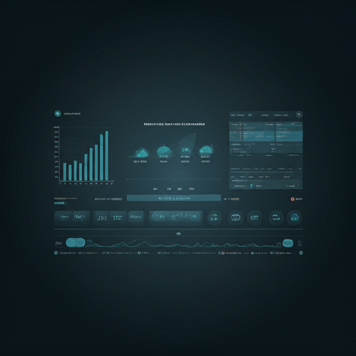
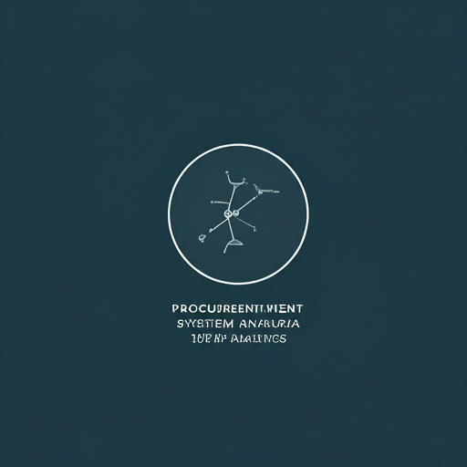
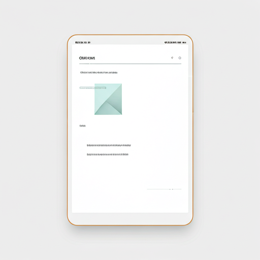
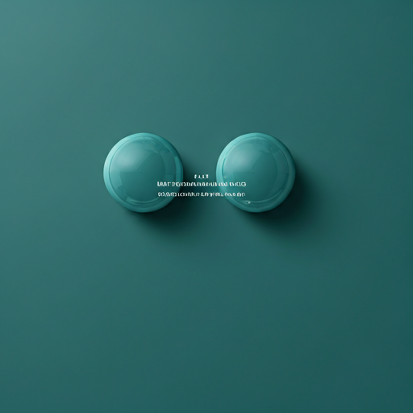

auto_awesome
AI-POWERED ECOSYSTEM
数字化供应链智能管理平台
整合采购、订单、配送与大数据分析，通过AI智能调度与实时追踪，为您的业务提供全链路可视化决策支持。

shopping_cart_checkout
智能采购系统
利用预测算法优化库存周转，自动化采购流程，通过供应商评分系统确保全球供应链的稳定性与高效率。

实时追踪
全球化物流路径动态可视化，毫秒级状态同步。基于数字化供应链管理，让每一件货物都尽在掌握。
Active Routes
LIVE
local_shipping
智能调度配送
AI驱动的路径优化算法，根据路况、天气及载重实时调整配送计划，降低15%物流成本。
全渠道订单管理
统一处理线上线下所有订单需求。支持复杂的分单逻辑与退换货闭环管理，显著提升客户满意度。
- check_circle 自动库存同步
- check_circle 多币种结算支持

决策数据分析系统
预测性维护
基于历史数据建模，提前预警供应链瓶颈，确保高可用性。
可视化经营大屏
实时KPI监控，支持全球维度的穿透式查询与钻取分析。
碳足迹追踪
践行绿色供应链，透明化运输过程中的能耗与排放数据。

开启您的数字化供应链转型
立即联系我们的资深咨询团队，定制最适合您业务规模的智能管理系统方案。